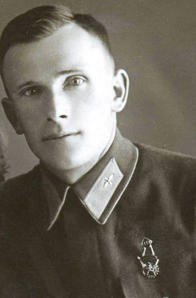
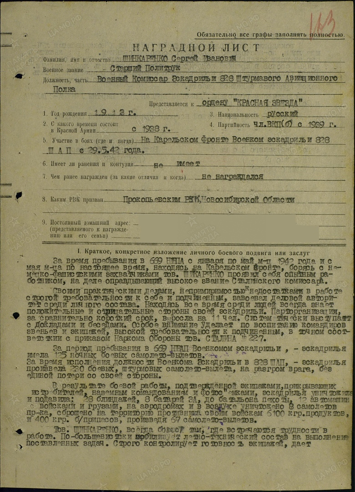
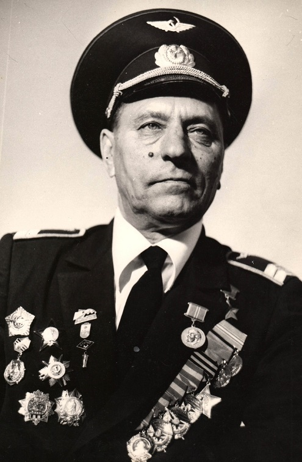
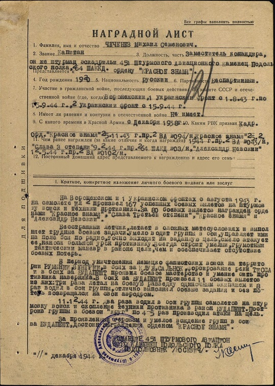

ШИНКОРЕНКО СЕРГЕЙ ИВАНОВИЧ (1913 г. р.)

Родился 31 марта 1913 года в селе Калманка Томской губернии (ныне - Алтайского края) в многодетной крестьянской семье. В 1929 году семья приехала в рабочий поселок Прокопьевск. В 16 лет Сергей пошел работать машинистом подъёма, а в 18 - стал ответственным дежурным по строящейся шахте «Коксовая-1».
В 1930 году поступил в Прокопьевский аэроклуб, который окончил в 1932 году. В 1936 году был избран председателем городского физкультурного комитета.
В 1937 году Сергей Иванович переехал в Новосибирск, где был назначен специалистом в промышленный отдел городского комитета Рабоче-Крестьянского Союза Молодежи. Комиссар эскадрильи Новосибирского аэроклуба, окончив Новосибирскую лётную школу, работал инструктором аэроклуба.
В 1938 году был призван в ряды РККА Центральным РВК города Новосибирск. Участвовал в советско-финской войне.
В годы Великой Отечественной войны Сергей Иванович сражался на Западном, Карельском, Ленинградском, 1-м Прибалтийском фронтах. Участвовал в Московской и Сталинградской битвах, защищал Ленинград.
Сергей Шинкоренко воевал в составе 172-го истребительного и 669-го штурмового авиационных полков. В марте 1942 года во время воздушного боя Сергей Шинкоренко был ранен, а самолёт подбит противником. В последний момент летчик успел выпрыгнуть из самолёта без парашюта. В тяжелых условиях, преодолевая все мыслимые и немыслимые преграды, Сергей Иванович 40 дней полз по карельской тайге, питался берёзовой корой, клюквой, но выжил вопреки всему. А семья получила известие о том, что Сергей Иванович пропал без вести. В середине апреля 1942 года он, обессиленный, вышел к партизанам. Лечился в госпитале. Ранения не позволили Сергею Шинкоренко летать.
С 29 мая 1942 года старший политрук Шинкоренко служил военным комиссаром эскадрильи 828-го штурмового авиационного полка 7-й Воздушной армии Карельского фронта. Находясь все время среди людей, он всегда знал положительные и отрицательные стороны своей эскадрильи. Систематически выступал с докладами и беседами. Строго контролировал готовность экипажей, давал практические советы. Сумел сплотить личный состав в крепкий коллектив, способный выполнить любые задачи.

Сергей Иванович очень хотел летать и неоднократно обращался к командованию за разрешением летать самому, но не был допущен к летной работе из-за большого перерыва и малой практики в летной работе.
С февраля 1945 года майор Шинкоренко работал заместителем командира 24-го учебного авиационного полка по политической части 1-й Рязанской высшей офицерской школы ночных экипажей ВВС. В 1946 году служил на Украине, учился в Высшей офицерской школе.
В 1948 году был демобилизован в звании гвардии полковник и вернулся в Новосибирск. Работал на заводе «Сибсельмаш» инструктором по гражданской обороне.
Самолёт, на котором летал Шинкоренко Сергей Иванович, установлен в музее авиационного полка в городе Самаре.
Боевые награды: орден Красной Звезды (14.12.1942), медали «За боевые заслуги», «За победу над Германией в Великой Отечественной войне 1941-1945 гг» (19.08.1945).
Буслов Фёдор Васильевич

Герой Советского Союза
Дата рождения: 23.02.1921
Место рождения: с. Донская Негачёвка, ныне Хлевенского р–на Липецкой области.
Должность и звание: заместитель командира эскадрильи 136 гвардейского штурмового авиационного Сталинского Краснознамённого полка, гвардии старший лейтенант.
Награды:орден Ленина и медаль «Золотая Звезда (29.06.1945), орден Красного Знамени (02.02.1944, 19.05.1944, 24.10.1944), орден Александра Невского (19.07.1944), ордена Отечественной войны I степени (02.04.1945), орден Красной Звезды (21.08.1943), медаль «За взятие Кёнигсберга».
Краткая биография
В 1925 году семья Буслова Федора Васильевича переехала в Кузбасс. В 1938 году Фёдор окончил 9 классов и устроился на шахту города Киселёвска. Занимался в аэроклубе города Прокопьевска, успешно окончил его и стал лётчиком-инструктором. В 1942 году окончил Омскую военно-авиационную школу и был направлен в запасной авиационный полк для дополнительного обучения полётам на штурмовике «Ил-2». В Красной армии с апреля 1940 года.На фронтах Великой Отечественной войны с августа 1943 года. Воевал на Южном фронте с 1943 года. С октября 1943 года на 4-м Украинском, с июня 1944 года на 3-м Белорусском фронтах.Участвовал в прорыве обороны фашистов на реке Миус, освобождая Донбасс, город Мелитополь, Приднепровье, Крым, Белоруссию и Литву. Вёл бои в Восточной Пруссии. С 1947 года — в запасе. С 1961 года работал в Новосибирском электротехническом институте учебным мастером, с 1963 года — заместителем начальника Новосибирского авиапредприятия. С 1975 по 1988 годы – директор Музея боевой и трудовой славы Новосибирского электротехнического института. Умер 8 октября 1990 года.
Информация о подвиге в ходе Великой Отечественной войны
20 августа 1943 года в составе одиннадцати Ил-2 с полной бомбовой загрузкой летал на штурмовку живой силы противника в районе Саур-Могильский. На пути к цели в районе Калиновка и Криничка встретили свыше 50 самолётов противника типа Ю-87. Фёдор Буслов ринулся в гущу вражеских самолётов и с дистанции 50-100 метров стал вести пулемётно-пушечный огонь. В результате воздушного было сбито 6 самолётов типа Ю-87 и один самолёт МЕ-109 подбит лично Фёдором Васильевичем.К 15 апреля 1945 года Ф. В. Буслов совершил до 200 боевых вылетов, уничтожил 7 самолетов на земле и сбил 5 в воздухе, уничтожил 20 танков, 2 железнодорожных эшелона, 50 автомашин, много зенитных орудий, свыше 500 солдат противника.
ЧЕЧЕНЕВ МИХАИЛ СЕМЕНОВИЧ (28.10.1920-02.08.1993)

Родился 28 ноября 1920 года в селе Бороденково Кузнецкого уезда Томской губернии (ныне - пос. Артышта Беловского района Кемеровской области) в семье крестьянина. Родители переехали в Прокопьевск. Здесь Михаил окончил 7 классов средней школы № 12. До войны работал в парикмахерской, учился в Прокопьевском аэроклубе. В рядах РККА с 1938 г. В 1940 году окончил Новосибирскую военную авиационную школу пилотов. Выпускника-отличника оставили в авиашколе инструктором. Началась война.
Неоднократные рапорты инструктора Чеченева М. С. об отправке на фронт получали отказ командования. Необходимо было готовить летчиков для фронта. Осенью 1942 года очередной рапорт был удовлетворен и Михаил оказался под Москвой, где в течение 9 месяцев осваивал Ил-2. С 1 августа 1943 года М. С. Чеченев участвовал в боевых действиях на штурмовике Ил-2 в составе 451-го штурмового авиационного полка на Воронежском, 1-м Украинском и 2-м Украинском фронтах. Придя в полк старшим летчиком, М. Чеченев дослужился до командира эскадрильи.
Бесстрашный летчик выполнял трудные боевые задачи, летал в сложных метеоусловиях без потери ориентировки, умело водил группы в бой, управляя ими по радио, за что Приказом 5-й воздушной Армии № 031 от 3 марта 1945 года ему было присвоено звание «Мастер воздушной радиосвязи».

Чеченев М. С. отличался построением грамотного тактического маневра в районе цели, что обеспечивало отсутствие боевых потерь эскадрильи. В воздушных боях с истребителями противника лично сбил 3 Ме-109, Ю-87, Ю-88. Летчик-штурмовик на самолете Ил-2 уничтожил 46 танков, 113 автомашин, 74 повозки, 3 паровоза, свыше 100 железнодорожных вагонов, подавил огонь 27 орудий зенитной и полевой артиллерии, более 300 немецких солдат и офицеров, на аэродромах противника уничтожил восемь самолетов Ю-52, четыре Ю-88, два ФВ-190.
Награжден тремя орденами Красного Знамени (11.09.1943, 23.02.1944, 31.12.1944), двумя орденами Красной Звезды (23.02.1944, 13.06.1945), орденами Александра Невского (12.05.1944), Славы III степени (09.02.1944), Отечественной войны I степени (08.06.1945).
Командиру эскадрильи 451-го штурмового авиационного Каменец-Подольского полка 264-й штурмовой авиационной Киевской Краснознаменной дивизии 5-го штурмового авиационного корпуса 5-й воздушной армии 2-го Украинского фронта капитану Михаилу Семеновичу Чеченеву за личный героизм, мужество и отвагу, проявленные в боях по освобождению Украины, Польши, в боях по уничтожению войск противника на территории Румынии, Венгрии 15 мая 1946 года присвоено звание Героя Советского Союза с вручением ордена Ленина и медали «Золотая Звезда».
В 1948 году Чеченев М. С. вышел в отставку в звании подполковника. После войны Михаил Семенович жил в Астрахани. Подполковник запаса, летчик-радист 1-го класса возглавлял производственно-диспетчерскую службу Астраханского аэропорта.
Назад